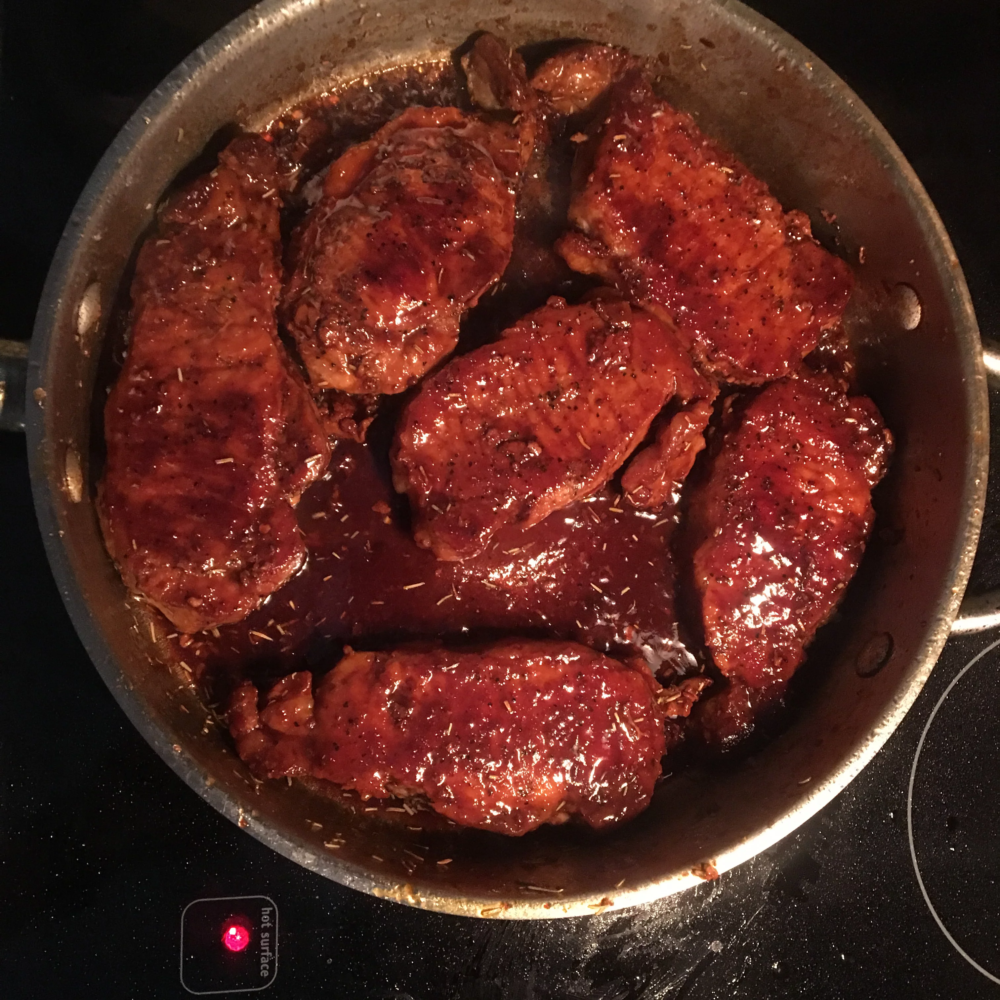

Pork Chops with Apple Cider Glaze

Sourced from Allrecipes
Description
Pork chops with a glossy apple cider glaze is really easy, and while
there's no starch or extra butter involved, it reduces quickly to a thick,
rich, sweet-tart apple syrup.
Ingredients
- 6 (6 ounce) boneless center-cut pork chops
- salt and ground black pepper to taste
- 1 tablespoon vegetable oil
- 1 tablespoon butter
- 3 cloves garlic, minced
- ¼ cup apple cider vinegar
- 2 cups apple cider
- 1 teaspoon Dijon mustard
- 1 teaspoon minced rosemary
- 1 pinch red pepper flakes
Steps
-
Season pork chops with salt and black pepper.Season pork chops with salt and
black pepper.
-
Heat oil and butter in a heavy skillet over medium-high heat. Cook pork
chops in the hot oil mixture until browned on both sides and pork is
slightly pink in the center, 5 to 7 minutes per side. An instant-read
thermometer inserted into the center should read at least 145 degrees F (63
degrees C). Remove pan from the heat; transfer pork chops to a plate.
-
Stir garlic into the pan and place over medium-high heat; cook and stir for
30 seconds. Pour in vinegar and scrape up any browned bits from the bottom
of the pan. Add apple cider and Dijon mustard, bring mixture to a boil, and
cook until sauce is reduced and thick, 3 to 4 minutes. Stir in rosemary and
red pepper flakes; season with salt and black pepper to taste.
-
Return pork chops to the pan to warm slightly, 1 to 2 minutes per side.